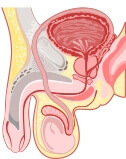

लिंग के आकार और शक्ति के बारे में 6 तथ्य जो आप नहीं जानते हैं

आदमी लोग क्रिकेट के बारे में घंटों बात कर सकते हैं लेकिन अपनी दादी के जन्मदिन को याद नहीं रख सकते हैं और यह बहुत आम बात है। पुरुषों के गौरव के मुख्य स्रोत के लिए भी यही सच है। वे इसके अस्तित्व पर विश्वस्त तो होते हैं, लेकिन इसकी संरचना से पूरी तरह से अनजान होते हैं और यह भी नहीं जानते कि इसे इस तरह से क्यों बनाया गया है। आज हम चर्चा करेंगे कि आप अपने लिंग के कामकाज को कैसे बेहतर बना सकते हैं।


डॉ. रेयांश लघारी:

एक अच्छी आनुवंशिक प्रोफ़ाइल वाले स्वस्थ पुरुष के लिए लिंग का सामान्य आकार 16-18 सेमी होता है। लिंग जितना बड़ा होगा उतनी ज्यादा संभावना है कि आपके बच्चे भी इसे विरासत में पाएंगे। इसके अलावा, एक लंबा लिंग औरतों के लिए भी बहत रोमांचक होता है। यह योनि के अंदर गहराई में जाकर मालिश कर सकता है और औरत को कई बार चरम आनंद दे सकता है।
इसके अलावा, वैज्ञानिकों द्वारा यह सिद्ध किया गया है कि एक लंबे लिंग वाले जंगली प्रकृति के पुरुषों में औरत को गर्भवती करने की संभावना अधिक होती है। सिर्फ इसलिए क्योंकि उस मर्द की शुक्राणु कोशिकाएं अंडाणु कोशिकाओं तक तेजी से पहुंच सकती हैं।
लिंग बढ़ाने के लिए कई उत्पाद मौजूद हैं। हालांकि, Libidex इनमें से सबसे असरदार और सस्ता है। इसके अलावा, यह घर पर इस्तेमाल किया जा सकता है। यह पूरी तरह से प्राकृतिक उत्पाद है जिसमें ऐसे सक्रिय तत्व होते हैं जो रक्त वहाव सिस्टम पर सकारात्मक रूप से असर करते हैं। वे लिंग को 5-6 सेमी लंबा और 3 सेमी मोटा बनाते हुए कॉर्पोरा कैवर्नोसा को मजबूत करते हैं। तुरंत रक्त वृद्धि होने से स्थिरता से लिंग खड़ा होता है और संभोग लंबा चलता है
रेयांश लघारी:
यह सच है! यह खास तौर पर अक्सर धूम्रपान करने वालों में देखा जाता है। निकोटीन और टार रक्त वाहिकाओं में रक्त वाहव पर नकारात्मक रूप से असर करते हैं। इससे धूम्रपान न करने वालों की तुलना में लिंग बहुत छोटा और उसके खड़े होने की ताकत काफी कम हो जाती है।
विहान पटेल:
उम्र से संबंधित नपुंसकता एक मिथक है। पुरुषों में खड़े होने की समस्या के लिए उम्र नहीं बल्कि बाहरी कारक दोषी होते हैं। इनमें घटिया भोजन, धूम्रपान, शराब का सेवन और कम कसरत शामिल है। ये सभी चीजें रक्त वहाव में समस्या का कारण बनती हैं जिसके परिणामस्वरूप लिंग कमजोरी से खड़ा होता है। और जब एक आदमी बूढ़ा हो जाता है, तो वह पूरी तरह से लिंग के खड़े होने की क्षमता भी खो सकता है।

डॉ. विहान पटेल:
40% मामलों में लिंग अपनी संवेदनशीलता और खड़े होने की क्षमता खो देता है। वैसे इसमें केस बिगड़ने के मामले कम होते हैं, लेकिन इस तरह की सर्जरी एक बड़ी सर्जरी होती है जिसमें तंत्रिका सिरों को नुकसान का काफी अधिक जोखिम होता है। इसके अलावा, बहाली में भी लम्बा समय लगता है। मुझे लगता है कि आपको इस तरह की सर्जरी को केवल बहुत विकट स्थिति में ही स्वीकार करना चाहिए - जैसे कि जब आपके लिंग की लंबाई 5 सेमी से भी कम हो। अन्य सभी समस्याओं के समाधान के लिए मैं गैर-सर्जिकल लिंग वृद्धि के तरीकों की सिफारिश करूंगा।
5. सहवास का औसत समय 26 मिनट होता हैयौन शक्ति में सुधार लाने में उत्पाद Libidex सबसे मददगार साबित हुआ है:आप Libidex केवल निर्माता की ऑफिशियल वेबसाइट पर ऑर्डर कर सकते हैं
- सामान्य अवस्था में भी लिंग का आकार 5 सेमी तक बढ़ जाता है
- लिंग की संवेदनशीलता में सुधार के कारण चरम आनंद 30 मिनट बढ़ जाता है
- सहवास के समय में 2 गुना तक की वृद्धि
- तुरंत लिंग खड़ा होना
- शुक्राणु कोशिकाओं की बेहतर गतिशीलता
डॉ. रेयांश लघारी:
हालांकि, हर आदमी इतनी देर तक नहीं टिक सकता। यदि कोई मर्द 5-10 मिनट में चरम आनंद पा जाता है, तो इतना समय एक औरत के लिए ऐसा करने के लिए काफी नहीं होता। दुर्भाग्य से, लगभग 70% पुरुष 15 मिनट से अधिक समय तक सहवास नहीं कर सकते हैं।
6. एक स्वस्थ पुरुष को दूसरे संभोग के लिए तैयार होने के लिए समय की आवश्यकता 1 मिनट है।डॉ. विहान पटेल:
यह सच है। एक स्वस्थ पुरुष केवल कुछ मिनटों में ही दूसरे संभोग के लिए तैयार हो सकता है। यहाँ समस्या यह है कि हम में से बहुत कम लोग हैं जो पूरी तरह से स्वस्थ हैं। इसलिए यदि आपको लगता है कि आपके लिए एक बार बहुत हो जाता है, तो यह आपके स्वस्थ न होने के कारण है। जितनी जल्दी आप सतर्क होते हैं आपके जल्दी ठीक होने की संभावना भी उतनी ही बढ़ जाती है। मेरा सुझाव है कि आप जल्दी ही इस समस्या का कोई उपाय ढूंढे अन्यथा समस्या और भी गंभीर हो सकती है।
ऑर्डर करें